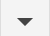
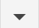
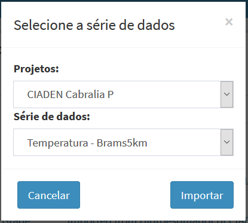

Acesso Direto
Uma característica dos dados dinâmicos está relacionada a sua origem, que podem ser identificadas como:
- Dados dinâmicos que são coletados de servidores remotos e são armazenados em servidores locais, seja arquivos ou tabelas. Note que neste caso é necessário definir as propriedades na aba “Armazenar”.
- Dados dinâmicos, seja arquivos ou tabelas, que se encontram localmente disponíveis. Estes são tratados como dados dinâmicos de acesso direto. Neste caso não é necessário definir as propriedades na aba “Armazenar”.
Dados dinâmicos que foram coletados em um projeto ou que estejam disponíveis por acesso direto podem ser utilizados por outros projetos como dados dinâmicos de acesso direto. Para definir um dado dinâmico de acesso direto é possível fazê-lo preenchendo as propriedades do dado dinâmico sem utilizar a aba “Armazenar”.
Para facilitar a utilização do acesso direto de dados dinâmicos entre projetos um atalho foi criado na área de trabalho para que o usuário escolha o projeto de origem e dado dinâmico desse projeto.
DICA: Utilize este recurso de acesso direto quando um projeto é utilizado para coletar dados remotamente e faz o armazenamento para que outros projetos façam acesso aos mesmos dados sem necessidade de coletar novamente o mesmo dado.
ADICIONANDO DADO DINÂMICO – ACESSO DIRETO:
Para adicionar um novo dado dinâmico de acesso direto é necessário ter um projeto ativo. No menu de opções selecione “  Dados Dinâmicos” para que a lista de dados disponíveis seja apresentada na área de trabalho. Clique no botão ““ (ao lado direito do botão “+” que adiciona novo dado dinâmico) e escolha “Importar série de dados”. Na janela “Seleciona a série de dados” apresentada (Figura 2.23), clique no botão “Projetos:” para escolher a origem dos dados. Após escolha do projeto o botão “Série de dados:” é apresentado para a escolha do dado dinâmico. Clique em “Importar” após as escolhas. O novo dado dinâmico será criado e estará salvo.
Dados Dinâmicos” para que a lista de dados disponíveis seja apresentada na área de trabalho. Clique no botão ““ (ao lado direito do botão “+” que adiciona novo dado dinâmico) e escolha “Importar série de dados”. Na janela “Seleciona a série de dados” apresentada (Figura 2.23), clique no botão “Projetos:” para escolher a origem dos dados. Após escolha do projeto o botão “Série de dados:” é apresentado para a escolha do dado dinâmico. Clique em “Importar” após as escolhas. O novo dado dinâmico será criado e estará salvo.

Figura 2.23 – Módulo de Administração: Dado dinâmico de acesso direto.